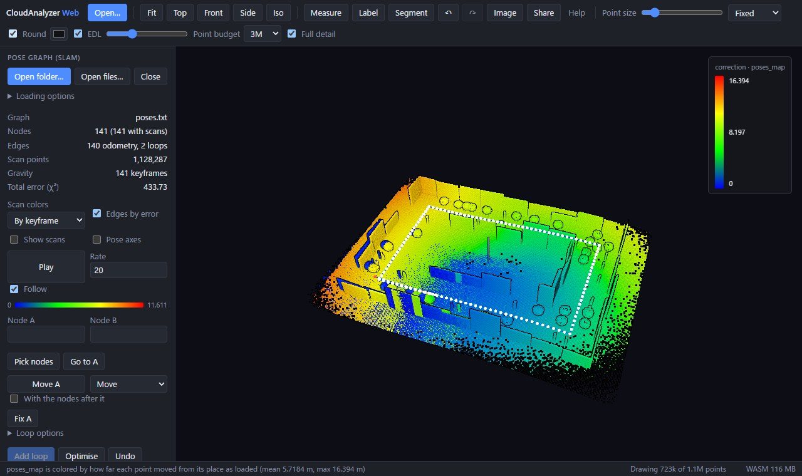
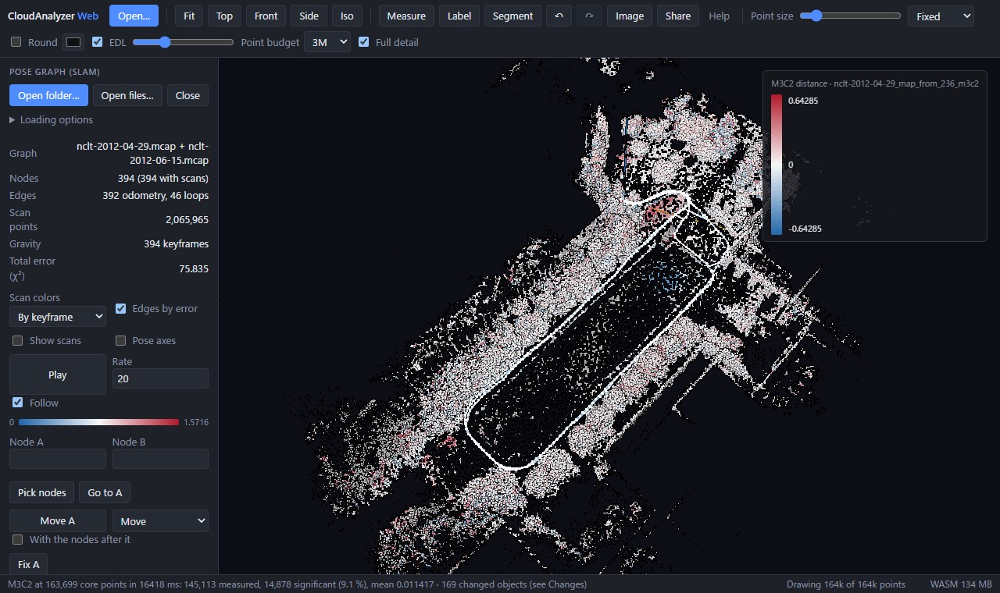
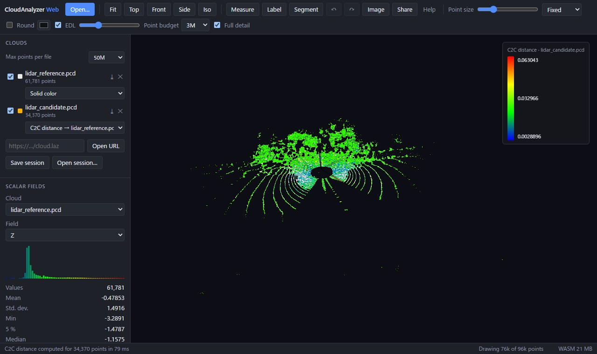
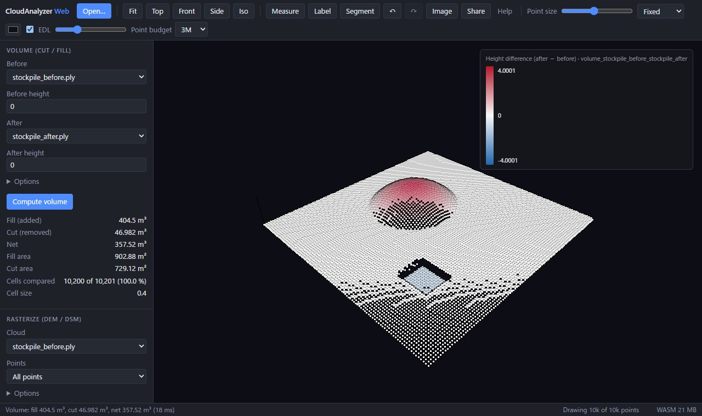

Bring it into view.
Open local scans, stream a COPC file, or replay a recorded drive. Color by height, intensity, or classification.
A workspace for spatial data
Explore a scan. Bring a map together. See what changed. Go from raw points to a clearer picture, right in your browser.
No install. No account. Your files stay with you.

01 / GET HANDS-ON
Start with a sample. Orbit, inspect, and run the analysis yourself.

REAL DATA · NCLTJoin two recorded drives and inspect the changes between April and June.
Explore two seasons · 19 MB sample
CLOUD-TO-CLOUDCompare two LiDAR scans. Turn point-to-point distances into a readable heatmap.
Compare the scans
CUT / FILLMeasure a stockpile or compare surfaces. Inspect cut and fill from every angle.
Measure the stockpile02 / FROM SCAN TO UNDERSTANDING
Follow the geometry, from the first look to the final measurement.
Read the field guideOpen local scans, stream a COPC file, or replay a recorded drive. Color by height, intensity, or classification.
Align with ICP, close SLAM loops, extract the ground, and inspect cross-sections. Draft and edit Lanelet2 maps over your cloud.
Compute distances, detect change with M3C2, and calculate cut and fill. Export results to take your work further.
03 / UNDER THE SURFACE
Open source. Local processing.
Room to explore.
Open your files directly in the browser. Analysis runs on your machine, with no account or upload step.
Inspect dense clouds with point budgets, full-detail loading, and COPC streaming. Explore with mouse or touch.
Save a session, share a view of URL-loaded data, and export clouds, measurements, trajectories, and maps.
MORE WAYS TO EXPLORE
A CLEARER PICTURE STARTS HERE